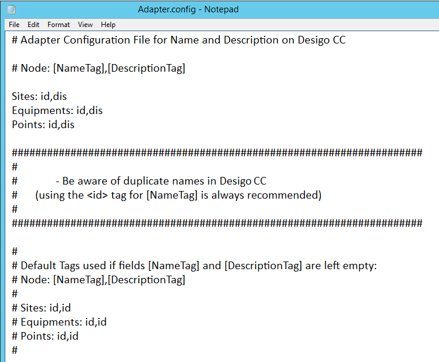
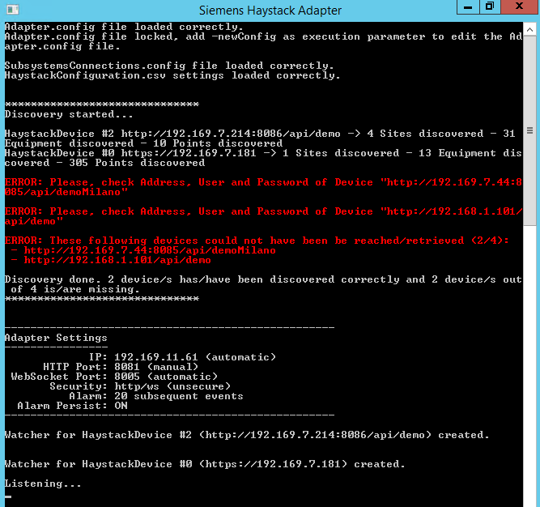

Install the Haystack Adapter
- Run Haystack_Adapter.msi.
- Follow the wizard instructions to complete the installation.
- Open the installation folder and run the batch file StartAdapter_Configuration.bat.
- When running for the first time in console mode, the adapter creates the Adapter.config file and opens it in a new window with Notepad.
NOTE: in all .config files, blank lines and lines starting with # are comments. - In the Notepad window, configure the Adapter.config file by specifying the default Haystack tags to use for Site, Equipment, and Point entities when imported in the Desigo CC Name and Description in System Browser. Any missing tag will be replaced by the id identifier (default tag):
Sites: <Haystack Tag for Name>, <Haystack Tag for Description>
Equipments: <Haystack Tag for Name>, <Haystack Tag for Description>
Points: <Haystack Tag for Name>, <Haystack Tag for Description>
NOTE: Using id for the name is always recommended.
For example: 
- Select File > Save and then File > Exit.
NOTE: To change this setting in future, run again StartAdapter_Configuration.bat. - In the adapter console window, press Enter to continue.
- When running for the first time in console mode, the adapter starts the HaystackAdapterConfigurator tool.
